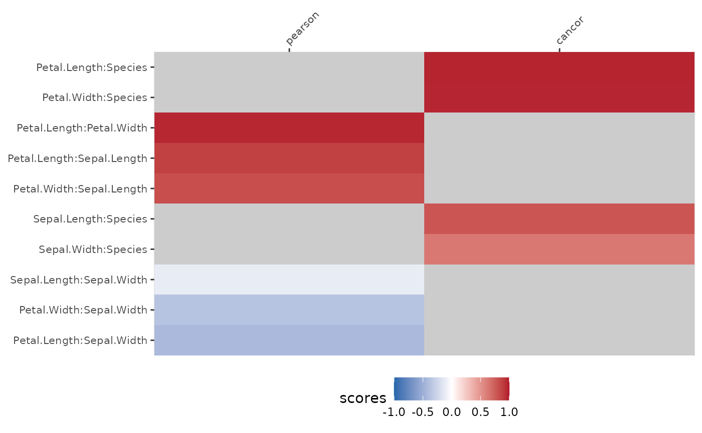
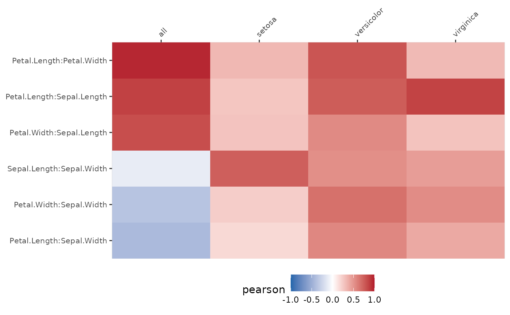
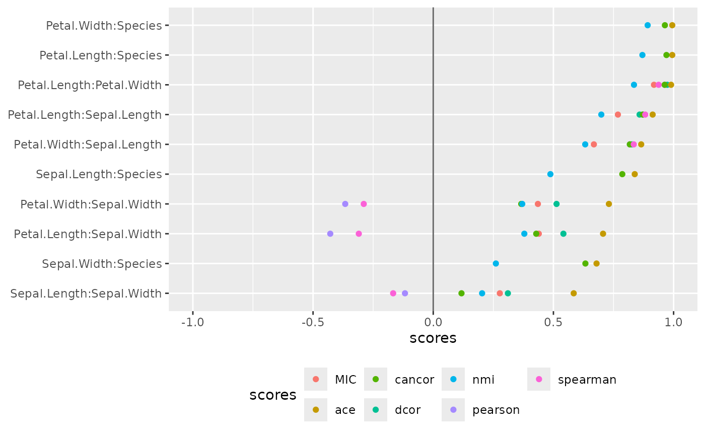

Pairwise plot in a linear layout
plot_pairwise_linear.RdPlots the calculated measures of association among different variable pairs for a dataset in a linear layout.
Usage
plot_pairwise_linear(
scores,
pair_order = "seriate_max",
geom = c("tile", "point"),
add_lines = FALSE,
score_limits = NULL,
na.value = "grey80",
interactive = FALSE
)Arguments
- scores
A tibble with the calculated association measures for the matrix plot. Either of class
pairwiseor identical in structure to object of classpairwise.- pair_order
The variable pair order to be used. The default NULL means pairs are in order of their first appearance in
scores. A value of "seriate_max" means pairs are in order of maximum absolute scores. A value of "seriate_max_diff" means pairs are in order of maximum scores difference.- geom
The geom to be used. Should be "point" or "tile".
- add_lines
When geom= "point" is used, should the points be connected by lines? Defaults to FALSE.
- score_limits
a numeric vector of length specifying the limits of the scale.
- na.value
used for geom_tile with a value of NA
- interactive
defaults to FALSE
Examples
plot_pairwise_linear(pairwise_scores(iris))

plot_pairwise_linear(pairwise_scores(iris,by="Species"))

plot_pairwise_linear(pair_multi(iris), geom="point")
